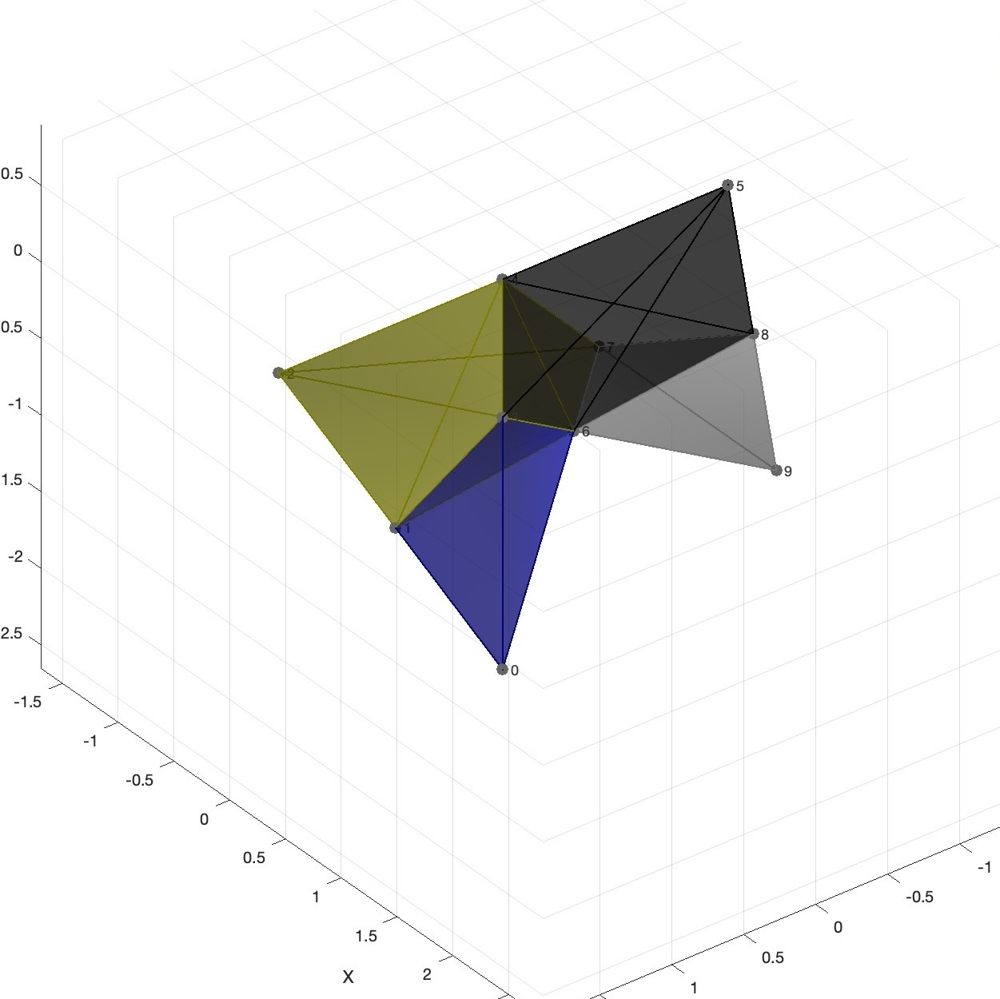
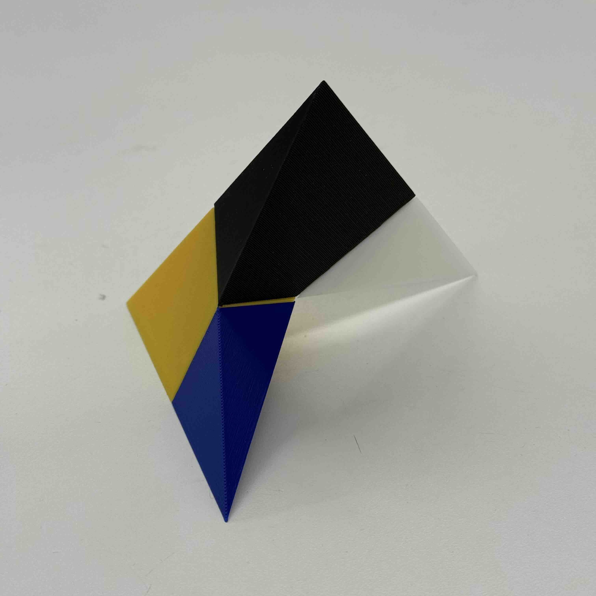
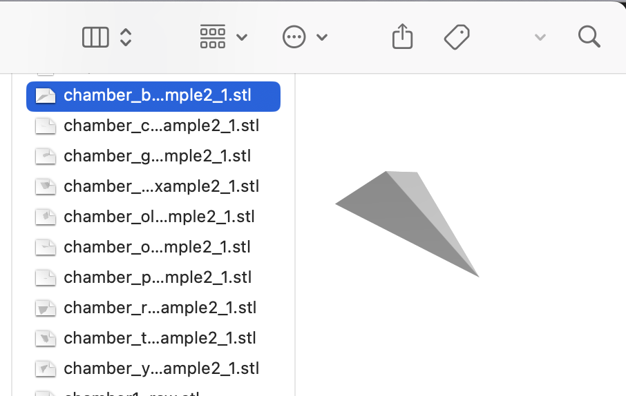
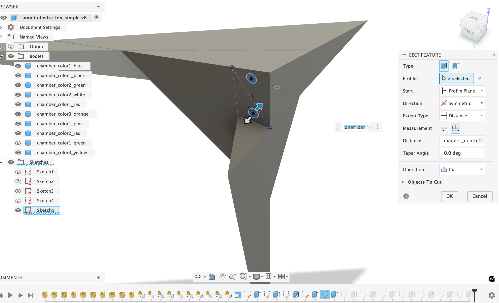
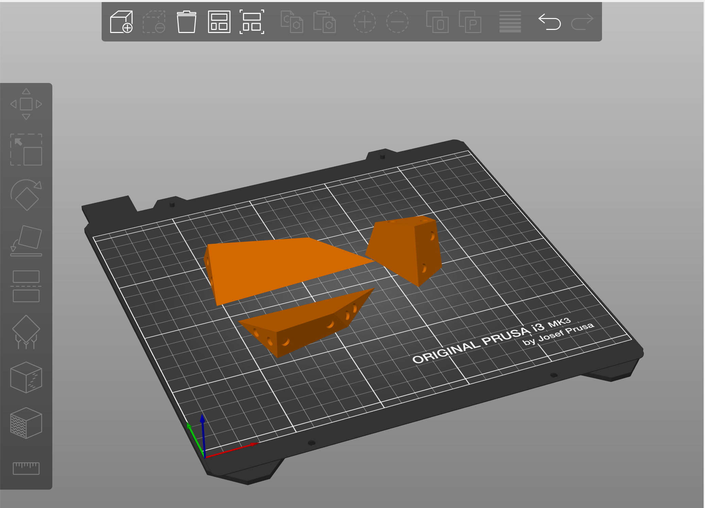
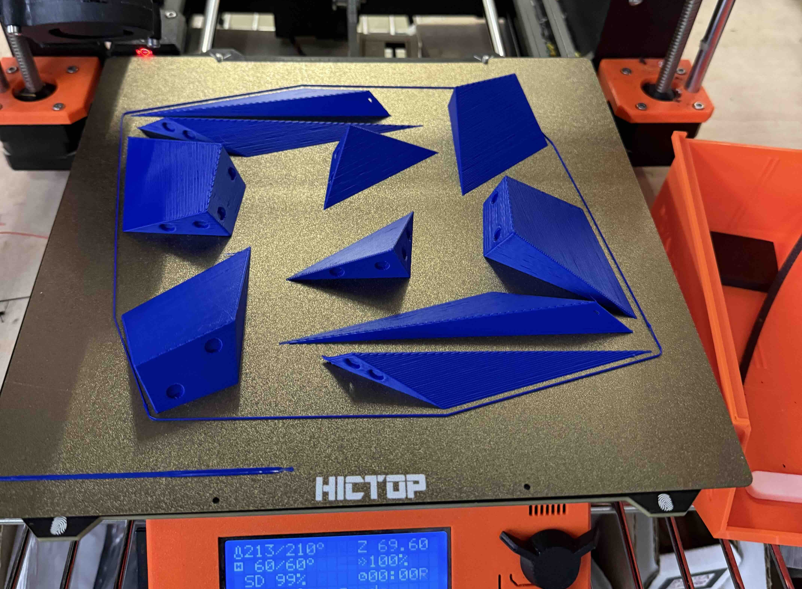
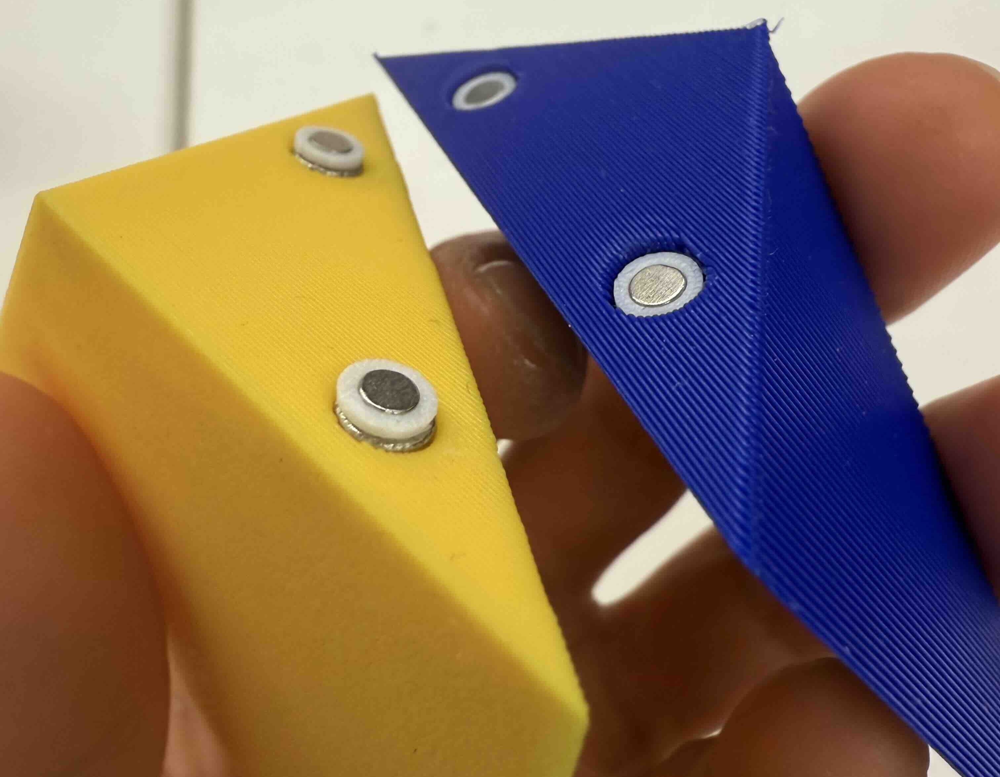

Amplituhedra Models
Completed: February 2026
10-piece model with magnets
Description:
I developed a set of 3D-printed, magnetic, snap-together models of amplituhedra as part of a project with Prof. Lauren Williams at Harvard. Amplituhedra are geometric objects whose shapes encode relationships in particle physics, and although they arise from high-dimensional mathematics, their structure can be understood through the chambers formed by hyperplane arrangements.
To make these abstract shapes tangible, I printed each chamber as a separate piece with embedded magnets so the pieces assemble cleanly into the full object. The result is a tactile model that helps students and researchers visualize and physically explore the geometry behind modern scattering-amplitude theory.

MATLAB-generated rendering of example with four chambers.

Physical model with four chambers.
Fabrication process:
-
Generate individual STL files using MATLAB code.

-
Import STLs into CAD modeling software and extrude magnet holes. (Or, simply open the attached .f3d file and edit parameters to desired magnet size.)

-
Export each chamber to slicing software, separating by colors.

-
Send to 3D printers. Print pegs as well.

-
Assemble adjacent faces with peg-hole pairs.

Files
- MATLAB code: amplituhedra_four.m amplituhedra_ten.m
- STLs with no magnet holes: 4piece_stls.zip 10piece_stls.zip
- STLs with magnet holes (5x2mm): 4piece_stls_magnets.zip 10piece_stls_magnets.zip
- Fusion file with modifiable parameters: 4piece_parametric.f3d 10piece_parametric.f3d
- Magnet peg STL: magnet_peg_2x1.stl